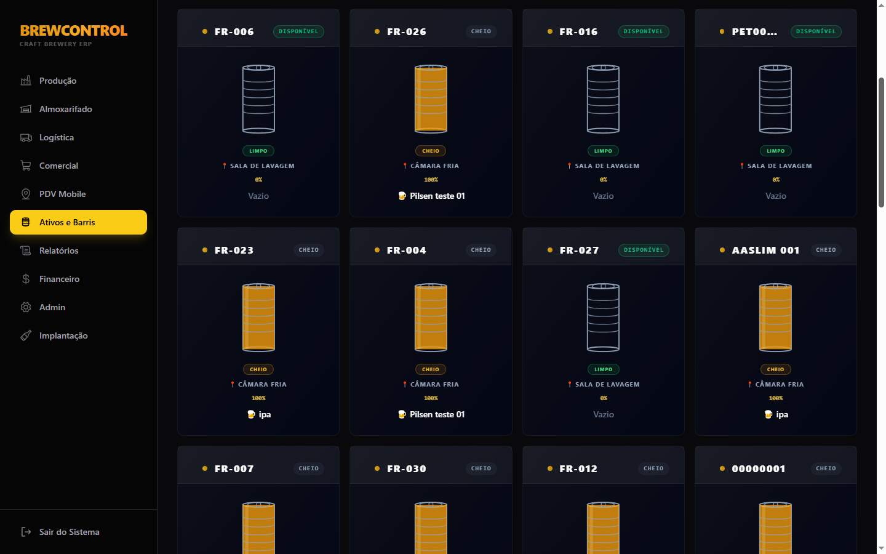

Receita, versão, lote e brassagens
Organize o que será produzido e preserve a relação entre receita, lote de fermentação e brassagens individuais, incluindo numeração e genealogia quando o processo exigir.
Planejamento, lotes, brassagens, Brew Day, tanques, medições, transferências e envase conectados no mesmo contexto operacional — para acompanhar a cerveja ao longo da fábrica sem transformar cada etapa em uma planilha isolada.

O BrewControl trata produção como um fluxo contínuo. Receita e versão dão origem ao planejamento; lotes e brassagens registram execução; tanque e adega carregam a cerveja pela fermentação e maturação; o envase fecha a etapa física e conversa com os demais domínios.
Organize o que será produzido e preserve a relação entre receita, lote de fermentação e brassagens individuais, incluindo numeração e genealogia quando o processo exigir.
Registre fatos do processo com data, responsável e medições. O domínio suporta fluxos de execução como Brew Day detalhado e Brassagem Rápida, sem transformar o histórico em edição solta de campos.
Acompanhe ocupação, fermentação, maturação, medições, CIP e movimentações. O objetivo é que o lote continue reconhecível mesmo quando a cerveja muda de etapa ou recipiente.
Conecte o encerramento da produção ao volume que sai do tanque e aos destinos de envase, incluindo barris e outras embalagens, com contexto para as áreas que vêm depois.
O estado atual ajuda a operar. Os eventos ajudam a explicar como aquele estado foi alcançado. Essa separação permite registrar produção sem apagar a história quando existe correção, transferência, divisão, mistura ou mudança de volume.
Referência técnica do que será produzido, incluindo estilo e estrutura da receita.
Planejamento do volume e identificação das execuções que compõem a produção.
Medições e fatos do Brew Day entram na história operacional do lote.
Fermentação, maturação, transferências e outras operações preservam o vínculo da cerveja.
O volume deixa o tanque e segue para barris ou embalagens dentro do mesmo contexto.
production/{lote}/eventsEsta página usa a interface real como prova visual. O poster abaixo é o BrewControl atual; quando o mini-demo de Produção estiver gravado e validado, o mesmo espaço passa a reproduzir o loop automaticamente sem mudar a estrutura da página.
O fluxo de trabalho privilegia o que precisa ser feito agora, mantendo os registros necessários por trás da operação.
O modelo por eventos preserva a sequência operacional e permite reconstruir decisões relevantes do lote.
Os fluxos do BrewControl são pensados para uso web responsivo em rotinas de chão de fábrica, acompanhamento e gestão.
A diferença entre um módulo isolado e uma operação conectada aparece nas transições. O BrewControl já possui integrações de domínio em que fatos de produção geram contexto para estoque e ativos.
Em etapas integradas, eventos de adição de insumos — como malte, lúpulo e dry hop — podem gerar movimentos de consumo no Almoxarifado. O estoque deixa de depender de uma segunda digitação desconectada do fato produtivo.

Eventos de envase em barris alimentam o domínio de Ativos, preservando a relação entre o que foi produzido e os recipientes usados na operação.

Informações em HTML visível para quem está avaliando o sistema — e para mecanismos de busca e agentes que precisam entender o produto com precisão.
O domínio cobre planejamento de receita e lote, brassagens, execução do Brew Day, acompanhamento de tanque e adega, medições, transferências e envase. O objetivo é representar a vida da cerveja ao longo da fábrica.
Sim. Fatos relevantes da produção são registrados em eventos, enquanto o documento operacional mantém o estado atual. Isso permite acompanhar a linha do tempo sem depender apenas do valor que está aparecendo agora.
Sim. Alguns eventos de execução podem disparar consumo automático de insumos. Entre os exemplos existentes no domínio estão adição de malte, adição de lúpulo e dry hop. Isso não significa que toda movimentação de estoque nasce automaticamente de qualquer ação de Produção.
Sim. O domínio possui eventos de envase em barris que alimentam Ativos, conectando o volume produzido ao recipiente usado no envase e à continuidade operacional daquele barril.
Sim. A plataforma possui base de estilos BJCP 2021, usada como referência para estilos de cerveja no ecossistema do BrewControl.

O BrewControl nasceu da tentativa de conectar problemas que, na rotina, costumam ficar separados entre planilhas, mensagens e sistemas genéricos.
Conheça a plataforma completa ou entre no BrewControl para ver a operação real.